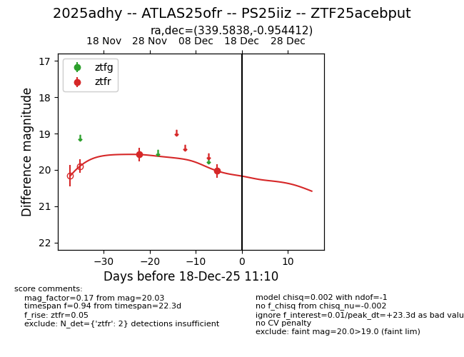
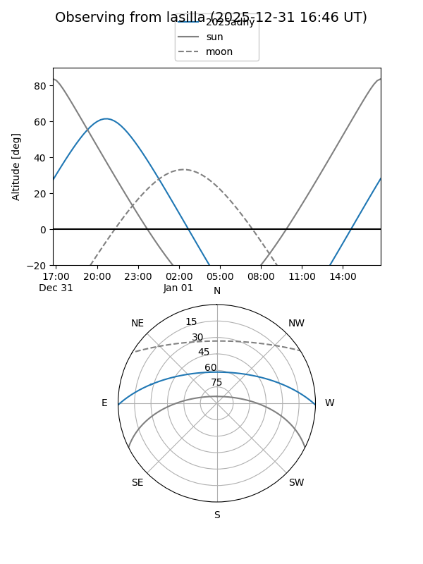
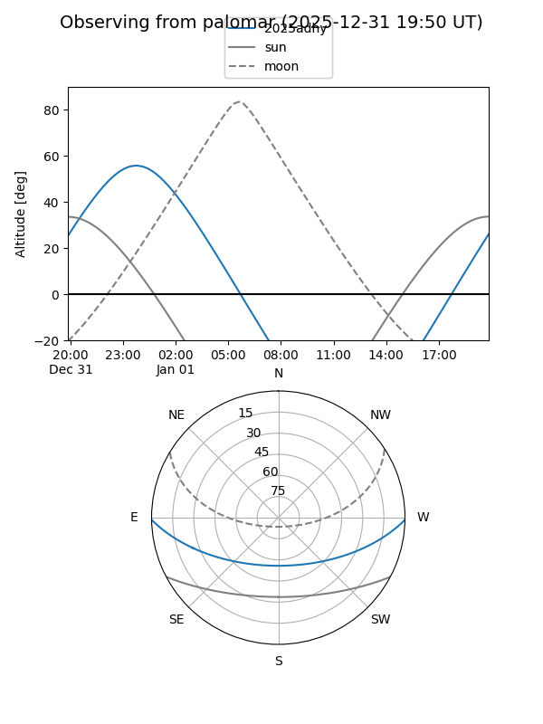
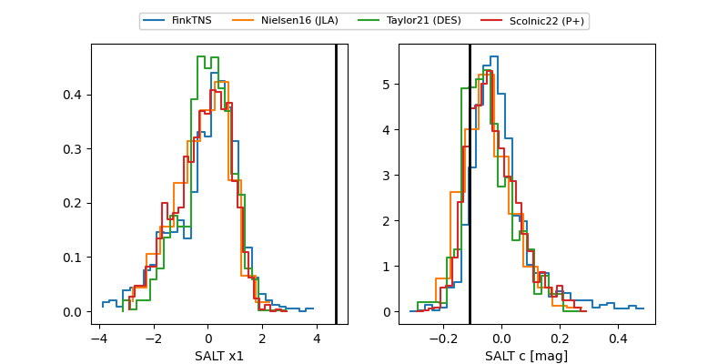

2025adhy
Target 2025adhy at 2025-12-31 16:59
Aliases and brokers:
FINK:
Lasair:
ALeRCE:
TNS:
YSE:
alt names
ZTF25acebput (ztf,fink_ztf)
2025adhy (tns,yse)
ATLAS25ofr (atlas)
PS25iiz (panstarrs)
Coordinates:
equatorial (ra, dec) = 339.5838,-0.95441
equatorial (HMS+DMS) = 22:38:20.11,-00:57:15.88
galactic (l, b) = (66.6665,-48.72549)
Flags:
Photometry:
last ztfr=20.03
2 ztfr detections
Lightcurve

Visibility


Additional plots
